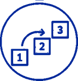

flowchart TD
P[("Parquet-register<br>på DST-serveren")]:::store
L["open_dataset()"]:::lazy
F["filter() - vælg rækker"]:::lazy
S["select() - vælg kolonner"]:::lazy
J["inner_join() - kobl (valgfrit)"]:::lazy
C(["collect()"]):::collect
R[("data.frame i R")]:::store
V["saveRDS() → datasets/"]:::save
P -->|"doven - intet flyttes endnu"| L
L --> F --> S --> J
J -->|"send forespørgslen"| C
C -->|"kun udvalgte rækker + kolonner"| R
R --> V
classDef store fill:#eef0f2,stroke:#8a94a6,color:#1f2733;
classDef lazy fill:#eaf2fb,stroke:#4a78b5,color:#173a5e;
classDef collect fill:#fff3e0,stroke:#e69500,color:#7a4f00;
classDef save fill:#e9f7ef,stroke:#3fae6b,color:#14532d;

Udtræk trin for trinÅbn, filtrér, vælg og hent
I Fase 4 så du, at registre indlæses dovent: du åbner en forbindelse, ikke data. Denne side viser arbejdsmetoden der følger af det - det samme mønster, du vil bruge i hvert eneste udtræk resten af guiden.
Dette er det vigtigste mønster i hele guiden. Alle udtræk fra DST-registre følger denne struktur. Lær det her én gang - du genkender det overalt fra Fase 6 og frem.
Hvorfor kan vi ikke bare indlæse et register som en CSV-fil? Fordi registrene er for store. En CSV (eller et readRDS) læser hele filen ind i hukommelsen på én gang - det går fint med dine egne små datasæt, men BEF og LMDB har millioner til hundredvis af millioner af rækker og ville crashe din session. Den dovne forbindelse lader dig filtrere inden du henter, så kun de rækker du faktisk skal bruge, nogensinde rammer hukommelsen.
Mønstret: åbn forbindelse → filtrér → vælg → hent
Forestil dig et supermarked. Du kan enten købe hele butikken og sortere derhjemme - eller sende en indkøbsliste og kun få det på listen leveret. Doven indlæsning er det sidste: du beskriver hvad du vil have, og henter først varerne hjem til sidst med collect().
Trin 1 - åbn registret som en doven forbindelse. Vælg den måde der passer til dit projekt (resten af mønstret er det samme, uanset hvad du vælger):
library(fastreg)
bef <- read_register("bef") %>% rename_with(tolower) # via navn - fastreg kender stienlibrary(arrow)
bef <- open_dataset(
"E:/workdata/[projektnummer]/cleaned-data/parquet-registers/bef/"
) %>%
rename_with(tolower)Trin 2-3 - filtrér, vælg, og hent så. bef er nu en doven forbindelse (ingen data er flyttet). Resten er ens, uanset hvordan du åbnede:
library(dplyr) # filter, select, collect
# 2. Filtrér rækker og vælg kolonner - stadig ingen data i R
bef_filtreret <- bef %>%
filter(aar == 2020) %>%
select(pnr, koen, foed_dag, familie_id)
# 3. collect() - HER flyttes de udvalgte data ind i R's hukommelse
bef_data <- bef_filtreret %>% collect()Trin 1–2 er rene instruktioner - de koster næsten ingen hukommelse. collect() i trin 3 er den eneste linje, der faktisk flytter data.
Hvorfor rename_with(tolower) som første trin? Rå kolonnenavne i DST-registre har inkonsistent store/små bogstaver - PNR, pnr, Pnr. Ved at standardisere til små bogstaver med det samme kan resten af din kode bruge pnr overalt uden at tænke på det. Tilføj det umiddelbart efter open_dataset() som det første led i din pipe - inden du filtrerer eller vælger kolonner.
Den vigtigste regel: filtrér og vælg kolonner FØR du henter
# RIGTIGT - filtrér rækker og vælg kolonner FØR collect
resultat <- stort_register %>%
filter(aar == 2020) %>% # behold kun de rækker du har brug for
select(pnr, koen, foed_dag) %>% # behold kun de kolonner du bruger
collect() # først nu flyttes data ind i R
# FORKERT - henter alle rækker og alle kolonner ind i RAM først, og filtrerer bagefter
resultat <- stort_register %>%
collect() %>% # alt ind i RAM - kan crashe din session
filter(aar == 2020)BEF har millioner af rækker; LMDB har hundredvis af millioner. At kalde collect() før du har begrænset rækkerne kan crashe din session - og fordi alle deler serverens RAM, gør det serveren langsom for alle andre samtidig. Jo mere du har filtreret og valgt kolonner på forhånd, jo hurtigere og mere stabilt kører det.
Tommelfingerregel: filter() begrænser rækker. select() begrænser kolonner. Brug begge inden collect(), aldrig efter.
Senere: behold kun din kohorte. Når du har bygget en studiepopulation, vil du som regel kun beholde din kohortes personer i et register. Det gøres med semi_join mod din kohortes pnr - introduceret når du trækker fra LPR (Fase 9b), når kohorten selv er bygget (Fase 10). Det har du ikke brug for endnu.
Skriv aldrig reelle CPR-numre (pnr) i din kode - kun variabelnavne og vektorer. At skrive faktiske CPR-numre direkte i et script er en overtrædelse af DST’s regler for håndtering af mikrodata.
Dybde: hvad !! betyder, og hvornår du har brug for det (spring over for nu, hvis det er nyt)
Nogle gange filtrerer du på en liste du selv har defineret i R - typisk et sæt ICD- eller års-koder:
mine_koder <- c("DE10", "DE11", "DE14") # lokal R-vektor du selv har lavet
register %>% filter(c_diag %in% !!mine_koder)Den dovne forespørgsel udføres ikke af R, men af databasemotoren (Arrow/DuckDB), som kører adskilt fra R og ikke kender dine lokale variabler. Uden !! ville motoren lede efter en kolonne ved navn mine_koder inde i registret. Den findes ikke - mine_koder er en R-vektor, du har lavet lokalt. !! betyder: “dette er et R-objekt, ikke et kolonnenavn - slå dets værdier op i R og brug dem i forespørgslen.”
Tommelfingerregel: refererer du til en kolonne i registret, skriver du navnet direkte. Refererer du til en R-variabel du selv har lavet, sætter du !! foran.
Det andet sted, det dukker op, er når du afgrænser et register til din kohortes pnr - men der bruger du semi_join, som tager en almindelig lokal tabel og helt undgår !!. Se Fase 9b.
Tjek: har du data eller bare en forbindelse?
Mange fejl opstår, fordi man tror, man har hentet data - men faktisk stadig sidder med en ueksekveret forespørgsel. Spørg objektet hvad det er:
class(mit_objekt)Hvad class() returnerer |
Hvad det betyder | Hvad du gør |
|---|---|---|
"tbl_df" "data.frame" |
Data er i R | Ingenting - du er klar |
"tbl_duckdb_connection" |
Usendt DuckDB-forespørgsel | Tilføj %>% collect() |
"Table" "ArrowObject" |
Usendt Arrow-forespørgsel | Tilføj %>% collect() |
Dybde: RAM er delt - ryd op efter store udtræk
På DST deler alle brugere serverens hukommelse. Når hukommelseslinjen i RStudio bliver rød, sænker det alles sessioner.
rm(stort_register) # fjerner objektet fra din R-session (forsvinder fra listen øverst til højre i RStudio)
gc() # beder operativsystemet om at genvinde hukommelsen R ikke længere brugerrm() fjerner objektet fra din aktive session - det kan ikke længere bruges i koden og forsvinder fra Environment-panelet (øverst til højre i RStudio).
gc() (garbage collection) påvirker ikke din session - alle dine øvrige objekter er stadig der. R holder normalt på frigjort hukommelse lidt ekstra, fordi det er hurtigere at genbruge end at bede operativsystemet om ny. gc() tvinger R til at aflevere den hukommelse tilbage til operativsystemet med det samme, så den bliver tilgængelig for andre brugere på den fælles DST-server. Du mister ingenting - det hjælper dine kolleger.
Ryd altid op efter store udtræk, inden du fortsætter.
Hvad sker der visuelt
De blå trin er dovne - de bygger kun en forespørgsel op. Først ved collect() (orange) flyttes data ind i R. Derfor skal filter() og select() stå før collect().
Vil du vide mere? Hvad er Parquet, Arrow og DuckDB egentlig?
Du behøver ikke kende disse navne for at bruge mønstret ovenfor - men her er hvad der sker under motorhjelmen.
Parquet er et filformat der gemmer data kolonne for kolonne i stedet for række for række. Vil du kun have pnr og aar, læser computeren kun de to kolonner - ikke resten. Det er derfor det er hurtigt.
På DARTER-projektet (708421) er de fleste SAS-datasæt allerede konverteret til parquet og kan åbnes direkte med read_register() - se DARTER - Registersti og datastores. På andre projekter kan du selv konvertere SAS-filer til parquet - se Fase 4 - Konvertér SAS til parquet.
Arrow er R-pakken der læser parquet-filer og oversætter dine dplyr-kommandoer til effektive parquet-forespørgsler. open_dataset() bruger Arrow.
DuckDB er en database, der kører direkte i din R-session. Den er lynhurtig og understøtter næsten al dplyr-syntaks. Bruger du read_register() (fastreg), bruges Arrow og DuckDB under motorhjelmen. Du skriver bare normal dplyr-kode - begge veje.
Mere teknisk: Arrow vs. DuckDB - hvornår bruges hvad?
Begge motorer bruger doven evaluering og collect().
Arrow er hurtig til at læse parquet, men understøtter ikke alle dplyr-funktioner. open_dataset() giver dig en Arrow-forbindelse.
DuckDB understøtter næsten alle dplyr-funktioner og er også lynhurtig. For at flytte en Arrow-forbindelse over til DuckDB sender du den gennem to_duckdb() (fra arrow-pakken):
bef <- open_dataset("sti/til/bef/") %>% to_duckdb() # forespørges nu af DuckDBread_register() (fastreg) giver dig allerede en DuckDB-forbindelse, så dette trin er indbygget - du kalder ikke selv to_duckdb().
Støder du på en fejl om “unsupported function” i Arrow, så skift til DuckDB med to_duckdb(), eller collect() data ind i R først og udfør operationen derefter.
Næste skridt
Du kender nu mønstret. I næste fase bruger du det på rigtige (syntetiske) registerdata fra start til slut.